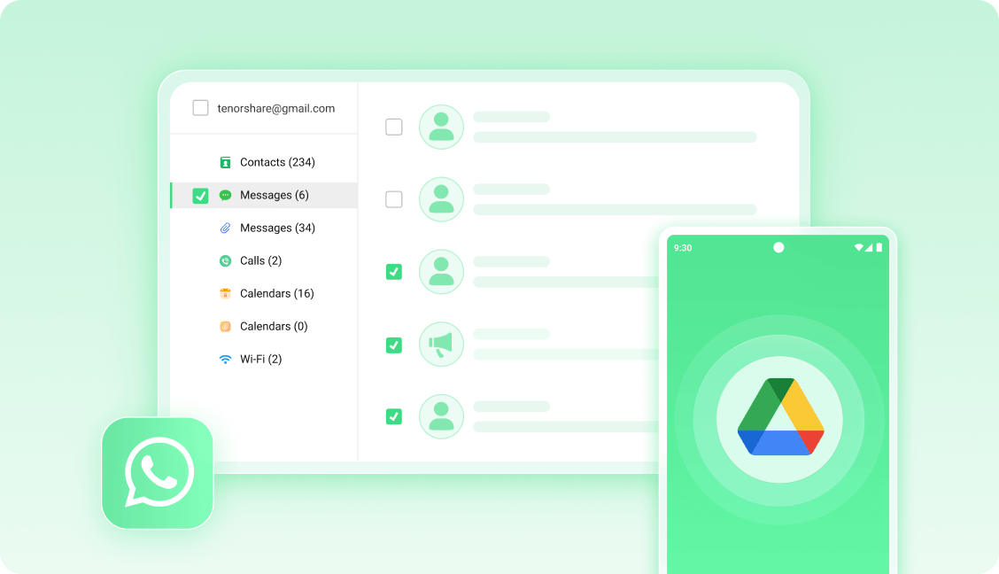

手机数据删了还能找回来？UltData 新手五分钟上手指南
误删照片视频、忘记WiFi密码、手机进水——这些糟心时刻 UltData 都能帮你救回数据。从零开始手把手教你用，不需要任何技术基础。
这篇能带你从完全不懂到用起来——不需要任何技术基础，跟着点就行。
它到底是干嘛的（一个生活化类比）
想象一下：你家垃圾桶里扔了一张合影，过了两天突然想起来要找。你会翻垃圾桶对吧？UltData 就是你手机里的「数字垃圾桶翻找器」。
它能干的事很多，但最核心的就一个：帮你找回手机上不小心删掉、或者以为丢了的数据。照片、视频、短信、通讯录、微信聊天记录、甚至连保存过的 WiFi 密码都能挖回来。
不是什么黑客工具，也不需要手机解锁——它在 Android 系统允许的范围内，扫描存储芯片上那些「被删除但还没被新数据覆盖」的空间。越早用，找回来的概率越大。

五分钟上手（从下载安装到第一次跑通）
不说空话，按这个顺序操作，五分钟内你就能完成第一次数据扫描。
第一步：拿到安装包
UltData 有两个版本——手机 App 版和电脑桌面版。新手推荐先用 App 版，直接在手机上操作最省事。它的ultdata官网上有官方下载入口，也可以去 Google Play 搜。桌面版适合要恢复大批量数据、或者连不上 App 的场景。
第二步：装上它
下载完 APK 点安装就行。首次启动会弹一串权限请求——全部允许，别纠结。存储访问权限是扫照片视频的前提，短信权限是恢复短信要用，通讯录权限是找联系人的。不小心拒了也没事，进系统设置里手动打开就行。
第三步：选一种恢复方式
打开主界面，你会看到几个大按钮：恢复照片、恢复视频、恢复微信记录、恢复 WiFi 密码……新手直接点「恢复照片/视频」最直观，马上就能看到效果。
第四步：扫它
点进去之后就是等。UltData 会在后台扫描手机存储，进度条走完，下面就会列出所有能找回的文件。扫描时间取决于你手机里东西多少，一般一两分钟。
第五步：挑你要的，保存
扫描结果按文件夹分类，照片有缩略图预览。勾选你要的那些（或者全选），点右下角的恢复按钮——选个保存位置，搞定。
就这么五步。第一次跑通了，后面其他功能都是换个扫描目标，流程一模一样。
上手后先玩这三个功能
第一次跑完照片恢复别急着关，这三个功能值得你马上再点一遍。
实时删除监控——让它给你当数据保镖
这个功能藏得有点深，但一旦打开就离不开。它让 UltData 常驻后台，只要你手机上任何地方删了文件，它瞬间就记下来。
你会看到什么：打开设置里的「最近删除监控」开关，按提示授予后台运行权限。然后该干嘛干嘛，该删照片删照片。等你后悔了打开 UltData，删除列表里已经乖乖躺着你刚删的东西——连删除时间、来源应用都标得清清楚楚。
这意味着什么：普通系统回收站只保留相册里删的照片，30 天就清空。UltData 监控的是所有应用产生的删除，微信里发错的文件、文件管理器里误删的文档，一个都跑不掉，而且一直保留到你手动清理。
WiFi 密码恢复——再也不用翻路由器标签了
家里 WiFi 密码忘了？路由器背面的标签磨掉了？UltData 能从你的 Google 备份里把密码挖出来，不需要 Root 手机，也不用重置设备。
你会看到什么：桌面端选「从 Google Drive 恢复数据」，登录你之前开了备份的那个 Google 账号，拉取备份列表，扫描完就会列出所有你连过的 WiFi 网络和对应的密码。操作流程不复杂，但 Google 备份的开启路径因设备而异，ultdata文档里有各品牌手机的对应设置步骤。
这意味着什么：通常 Android 上的 WiFi 密码是加密存在系统文件里的，要看就得 Root。但如果你开了 Google One 备份（多数人都开了），备份里就包含 WiFi 密码这一项——UltData 走的就是这条路，零门槛。

SD 卡扫描——老机型用户的福音
如果你的手机还能插 SD 卡，这个功能别浪费。SD 卡物理上独立于手机主板，即使手机进水坏了、系统崩了，拔出来用读卡器插电脑上，UltData 照样能扫。
你会看到什么：桌面端连接手机后，会自动识别内置存储和 SD 卡两个扫描目标。选 SD 卡，扫描，恢复——流程和内置存储完全一样。
这意味着什么：很多人照片默认存在 SD 卡上，手机坏了第一反应是「完了数据没了」。其实把卡拔出来插电脑，用 UltData 扫一遍，大概率能全找回来。这一招在手机进水场景特别有用——主板烧了但 SD 卡没碰水，数据就安全。
小白的三个常见疑问
Q1：安装时那些权限我到底该不该全给？
该。UltData 要的每一项权限都对应一个恢复功能——不给存储权限就扫不了照片，不给短信权限就恢复不了短信，不给社交应用权限就碰不到微信记录。全给了，用完你要是介意，进设置里关掉也行。
别担心安全问题：它不联网上传你的数据，扫描全程在本地完成。
Q2：我连了 USB 线，电脑怎么识别不到手机？
十有八九是线的问题。市面上很多 USB-C 线材只能充电不能传数据——插上去手机显示充电但电脑就是看不到盘符。
怎么确认：插上后下拉手机通知栏，看有没有「USB 用途」选项。选「文件传输（MTP）」，电脑能看到手机盘符就说明线对了。找不到这个选项，换原装数据线试试，大概率就好。
Q3：手机进水了还能救数据吗？
分情况说。还能开机进系统：立刻装 UltData 扫一遍，越早越好——进水可能导致存储芯片加速老化，数据丢失概率在涨。
能亮但进不了系统、或者一直重启：短时间内拼命进系统，进去了赶紧扫。不行的话，拔 SD 卡用读卡器插电脑扫，SIM 卡里的联系人插新手机就能读。
彻底不开机：UltData 帮不上了，得找专业数据恢复店拆机取闪存芯片读，费用几千到两万不等，成功率取决于芯片损坏程度。
重点记住一句话：晾干能开的第一时间用 UltData 扫一遍，别等明天。很多人晾干还能用，过几天突然坏了，数据就真没了。
接下来可以玩什么
三个功能先跑一遍，你对 UltData 的基本操作就门清了。想继续深挖的话，可以试试微信和 WhatsApp 的聊天记录恢复——这两个需要 App 版配合桌面端操作，稍微复杂一点但数据价值高。
另外建议你花五分钟把实时删除监控打开，设成常驻后台。小米、OPPO、vivo 这些国产系统会杀后台，记得把 UltData 加到电池优化白名单和自启动列表里，再在多任务界面下拉锁定一下——这样它就不会被一键清理干掉了。
数据恢复这事儿，准备永远比补救省事。装好 UltData，开着实时监控，相当于给你的手机数据买了一份不用花钱的保险。如果想看看更多实操案例和进阶技巧，这套资料在GitHub、Gitee、GitCode 都能拿到，哪个平台用着顺手就看哪个。